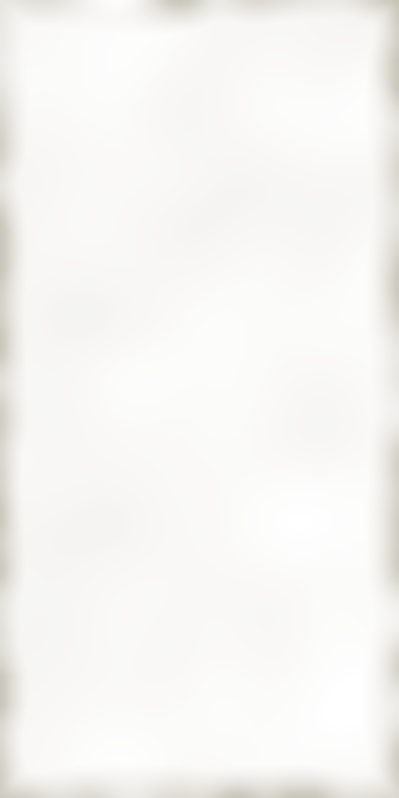
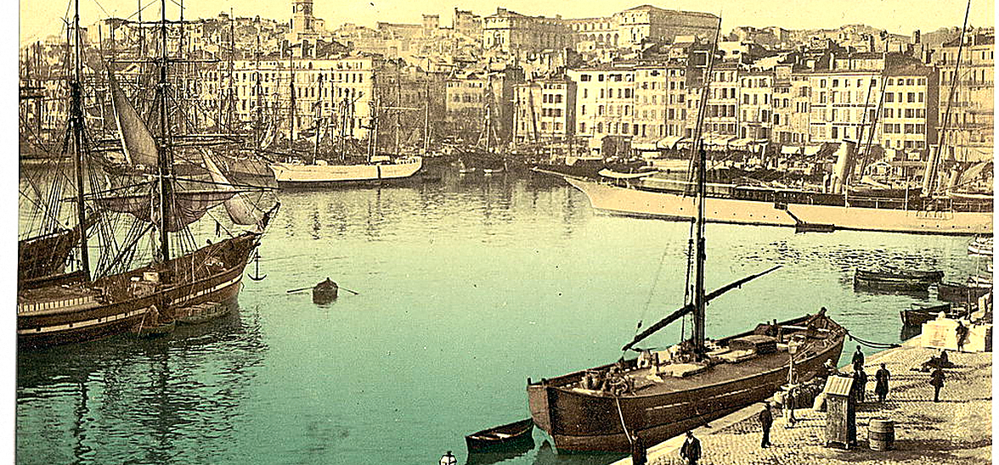

SERVICE DU SOIR, DE 18 HEURES
La Carte

Le Vieux Port, Marseille. The quay where the house began.
Les Plats
Steak frites béarnaise
6.75
Sirloin seared hard and rested, warm tarragon and shallot butter sauce, hand-cut potatoes fried twice.
Coq au vin
5.50
Chicken braised slowly in Burgundy with lardons, button mushrooms and small onions.
Bouillabaisse
7.50
Rockfish, red mullet and mussels in saffron and fennel broth. Rouille and croutons.
Desserts
Crème caramel
1.25
Vanilla custard baked in a water bath, chilled, turned out under amber syrup.
Tarte Tatin
1.25
Apples baked under butter and sugar, turned out warm with crème fraîche.
Au bar
Mauresque
1.50
Pastis and orgeat over ice, clouded with water.
Vin en carafe
1.75
Young Côtes du Rhône, half carafe. The full carafe 3.25.
Café filtre
.35
Dark roast, black, with a square of bitter chocolate.
Prix nets, service non compris. Prices subject to change.
Le Vieux Port, First Avenue, New York. Carte d'hiver No. 71. Closed December 25.
Le Vieux Port, First Avenue, New York. Carte d'hiver No. 71. Closed December 25.